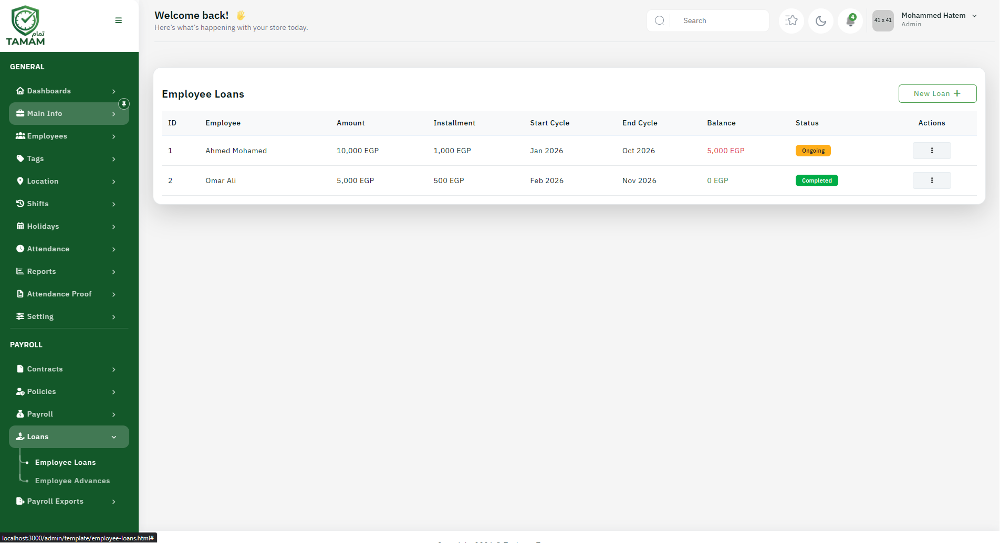

The Employee Loans module enables management of employee loans and advances, including processing applications, setting repayment schedules, and tracking deductions.

Types of Employee Loans
- Personal Loans: General purpose loans for personal needs
- Home Loans: Special loans for home purchase or construction
- Education Loans: Loans for employee or dependent education
- Auto Loans: Loans for vehicle purchase
- Emergency Loans: Quick loans for emergencies
Employee Advances
Salary advances are short-term loans against future salary:
- Quick approval and disbursement
- Deducted from next month's salary
- Typically repaid within 1-3 months
- Lower interest rates than personal loans
Loan Management Workflow
- Employee applies for loan
- Manager reviews application
- HR approves or rejects
- Set loan terms and conditions
- Generate loan agreement
- Disburse loan amount
- Track repayments
- Update payroll with deductions
Loan Details to Configure
- Loan amount requested
- Loan purpose and justification
- Loan tenure (months/years)
- Interest rate
- Monthly repayment amount
- Start date of repayment
- Processing fee (if applicable)
Recording Loans in Payroll
- Go to Loans → Employee Loans
- Click "Add New Loan"
- Select employee and loan type
- Enter loan amount and terms
- Set repayment schedule
- Create salary component for loan deduction
- Approve and activate
Repayment Tracking
- View outstanding loan balance
- Track monthly repayments
- View repayment schedule
- Generate loan statements
- Mark loan as paid in full
Loan Reports
- Active loans by employee
- Outstanding loan balances
- Monthly loan repayment summary
- Loan default reports
- Interest paid summary
Best Practices
- Set clear loan eligibility criteria
- Establish maximum loan limits
- Define interest rates by loan type
- Document all loan agreements
- Communicate terms clearly to employees
- Ensure deductions are accurate
- Review loan policies regularly
Compliance Considerations
- Follow labor laws on loan interest rates
- Ensure loan agreements are legally binding
- Maintain confidentiality of loan information
- Document all approvals and rejections
- Maintain audit trail of loan transactions
Tip: Clearly communicate loan policies and terms to employees to avoid misunderstandings and disputes.